Games
There are a number of games made for the Spring Engine. Some of the more popular ones are listed below, sorted by their terms of use.
You can download games automatically, using your lobby (see Read Me First). Some games also offer a stand-alone installer.
Open Source
These games are all free to download and play and may be open to modifications, however, be sure to read the licenses before doing so.
Zero-K(CC-BY-NC-ND for music, GPL/PD for code and all other assets) | |
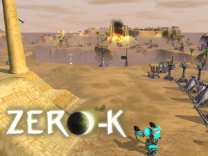 |
Zero-K is a fast, competitive game with a focus on a streamlined economy and advanced interface that takes the focus off tedious tasks and back on the action. A huge roster of interesting, unique units and a variety of unit abilities provides tremendous tactical and strategic depth to the game. (This game is available via Itch.io and Steam.) |
Spring: 1944(CC-BY-NC) | |
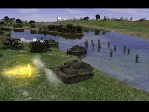 |
Spring:1944 is a WWII themed game with eight fully functional armies (US, Germany, USSR, Britain, Japan, Italy, Hungary, Sweden), period-accurate units and strengths. Realism comes second only to creating a game that is fun and accessible to play. (homepage, youtube 1, youtube 2, subforum) |
Evolution RTS(CC-BY-SA) | |
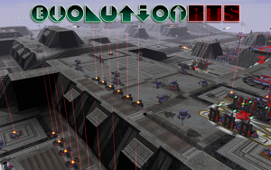 |
A new war is brewing. A violent conflict, between the Six Colonies, each one convinced that it was in the right, each one sure of its own ability to defeat its enemies. But they need Generals. They need soldiers. They need you. (This game is available via Itch.io and Steam.) |
Kernel Panic(FOSS) | |
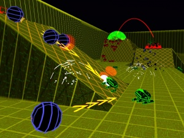 |
A game based around combat inside a computer, with 3 unique sides: the System, the Hacker and the Network waging war in a matrix of DOOM! No resource economy exists in KP, with the only constraints being time and space. |
On The Edge(GPL, CC-BY-NC-SA, etc) | |
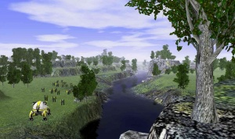 |
First Spring MOBA with unique pre-game hero setup. Under heavy development. (On The Edge forum thread) |
Metal Factions | |
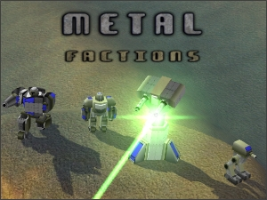 |
An evolving game that started as a TA mod and currently features four factions: AVEN, GEAR, CLAW and SPHERE. Commanders can morph to fit into different play styles and be easily revived. Economy scaling is more strictly tied to map control. |
The Cursed | |
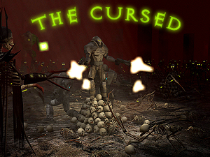 |
The game is about bones, undead, demons, space marines and magic settled in a futuristic environment. It is a fresh mixture of gameplay elements from many popular RTS games like Starcraft and C&C. (homepage, youtube 1, youtube 2, subforum) |
Journeywar(GPLv3) | |
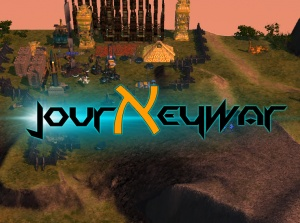 |
Journeywar is the final battle between Combine and Exobiotics. Join the fight and rediscover the HL- Universe from a new, strategic perspective. (dev blog, subforum) |
Proprietary
These games may or may not be free to play. Modifying their content (i.e. the art assets) is not allowed without the game authors explicit permission, although the code is GPL and some games include large GPL-friendly content collections.
Conflict Terra | |
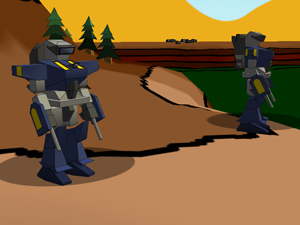 |
A unique game with heavy emphasis on mobility and featuring Spring's first major "collect and drop-off" economy, Conflict Terra boasts a distinctive art style. Play as one of two factions in an ever-changing battlefield as you struggle to come out on top. (homepage, currently proprietary, last known public domain release, subforum) |
Star Wars: Imperial Winter | |
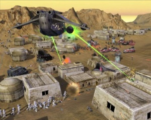 |
A Star Wars themed game set in the troubled post-Return of the Jedi era. |
Spring Mech Commander Legacy Project | |
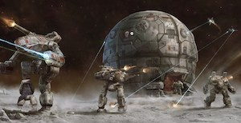 |
A cool RTS based in the Battletech Universe. |
TA-derived
At least parts of these games are derived from data of the Total Annihilation game (copyright Wargaming). As such, their distribution is potentially in breach of copyright laws and therefore not officially endorsed by the Spring RTS team.
Balanced Annihilation | ||
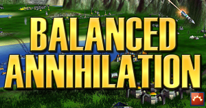 |
Balanced Annihilation (BA) is a fan mod of TA that evolved out of the TA Demo Recorder (1999) that aims to build on the graphics and balance of the original. BA gameplay develops in stages of progressively heavier units with a growing economy. Many strategies are viable in BA, including focusing on map control, aggression, defense, air power, sea power, or mobility. BA also runs competitive 1v1 tournaments, such as the Crown Cup 3, which attracted 64 players. | |
NOTA | ||
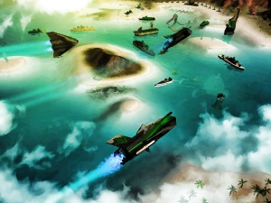 |
Not Original Total Annihilation is a rethink of the Total Annihilation universe with a focus on strategic, base oriented gameplay. With its revised unit scale, huge battles erupt engaging hundreds of units and scores of unit types. NOTA's completely rethought air and sea gameplay forces participation in all elements and places the tide of conflict in your hands. (This game is available via its own lobby.) | |
TA Prime | ||
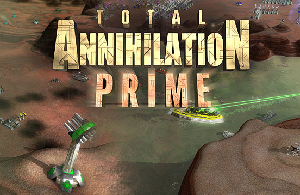 |
Highly polished prequel to Total Annihilation, with a full-blown tech tree, unit abilities and a strong rock-paper-scissors countering system similar to C&C games. | |
Tech Annihilation | ||
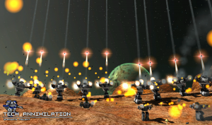 |
This Game is bigger, greater and more epic! Tech your Commander from a tiny Commander to a Galactic Commander! (currently no homepage) | |
XTA | ||
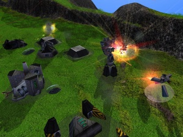 |
Originally developed as a Total Annihilation game by the Swedish Yankspankers, XTA is the Original Public Game released with first versions of Spring. Development of this game by the SYs has stopped a while ago, but it is still played and actively developed by the community. |
{kind=link}
Installing Games in Spring
Quite a few of the games listed above come with standalone installers, which makes things easy. Check their website to find out! Otherwise a lobby such as SpringLobby will download everything for you when you join a game room.
Games can also be downloaded manually as .sdz/.sd7 files, for example BA750.sd7 or XTA.sdz, and placed into ...\My Documents\My Games\Spring\Games\ or ...\Spring\games\ folder (~/.spring/games/ on Linux/Unix/Mac). Read the advice on this page if your lobby does not find your games. You may install multiple games in the same engine installation. The same goes for Maps. Place them into a folder called maps in the same folder where the games folder is.
Still not enough Games? There are some more, not listed here or make your own Game!